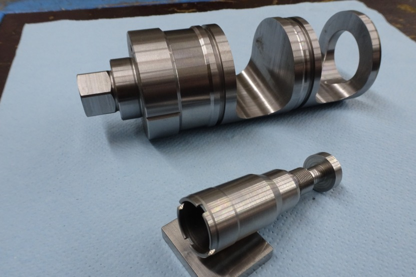
01
CNC-Drehen
Hochspezialisierte Teile nach technischer Zeichnung oder 3D-Datei.
Präzisionsmechanik aus Wünnewil
CNC-Drehen, CNC-Fräsen und Metallbearbeitung für Einzelteile, Prototypen und mittelgrosse Serien – zuverlässig gefertigt seit 1989.
Was wir für Sie fertigen
Hagi Mechanik AG fertigt technische Präzisionsteile nach Ihrer Zeichnung oder 3D-Datei. Dank vielseitig eingerichteter Werkstatt entstehen auch bei anspruchsvollen oder kurzfristigen Anfragen passgenaue Lösungen.
Unverbindlich Machbarkeit anfragen →Unsere Leistungen
Vom digitalen Datensatz bis zum fertig bearbeiteten Werkstück.

Hochspezialisierte Teile nach technischer Zeichnung oder 3D-Datei.
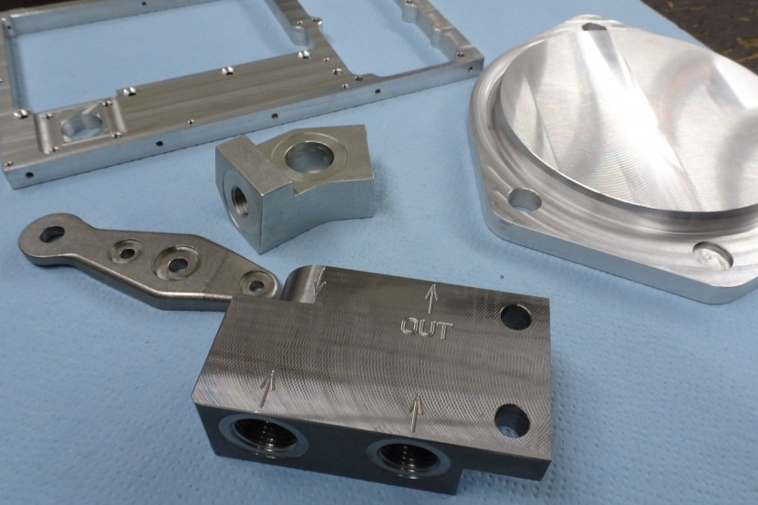
Präzisionsteile exakt nach Ihren Daten und Zeichnungen.
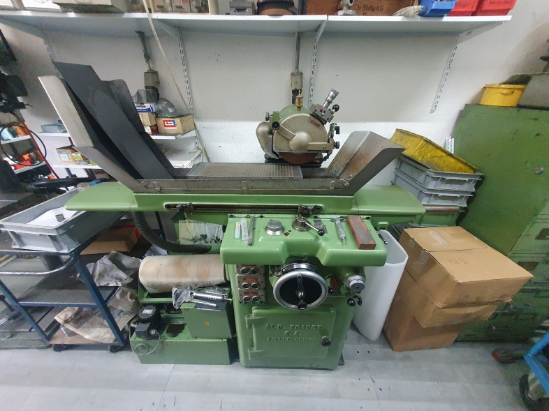
Präzises Flachschleifen mit einem Arbeitsbereich von 200 × 500 mm.
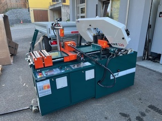
Stangen bis Ø 250 mm und einer Länge von 3000 mm.
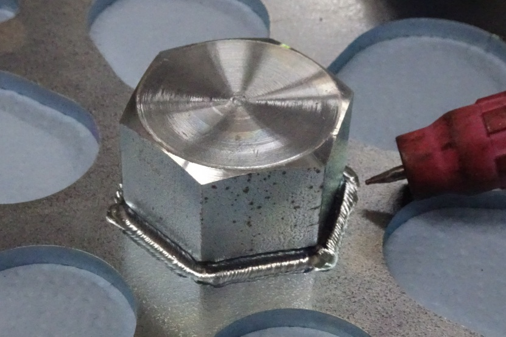
Autogen, elektrisch, TIG sowie Kalt- und Warmaufspritzen.
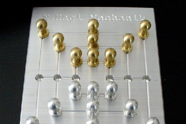
Metallteile nach Wunsch nummerieren oder beschriften.
Technik & Kapazitäten
Vom kompakten Einzelteil bis zum anspruchsvollen Werkstück: neun Maschinen schaffen die passende Basis für eine wirtschaftliche Umsetzung.
Fünf Maschinen für flexible Durchmesser, unterschiedliche Bauteillängen und automatisierte Bearbeitung.
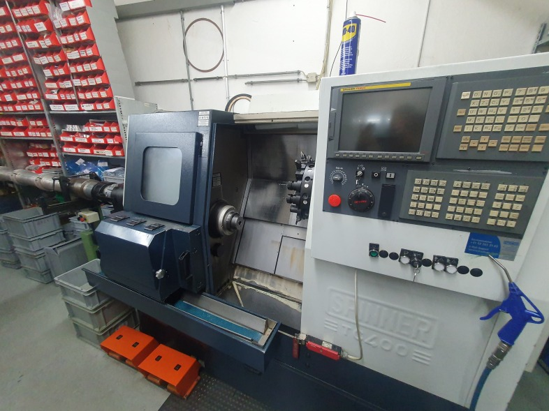
CNC-Drehautomat
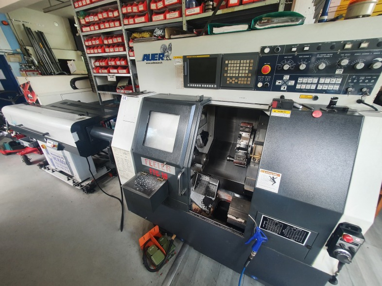
CNC-Drehmaschine
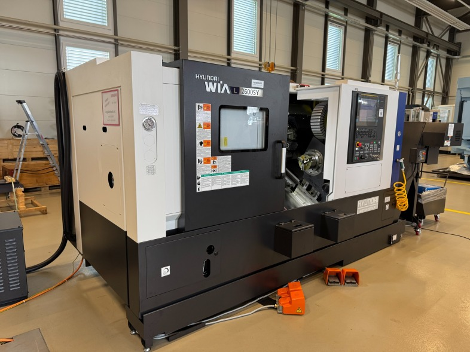
CNC-Drehen mit Y-Achse
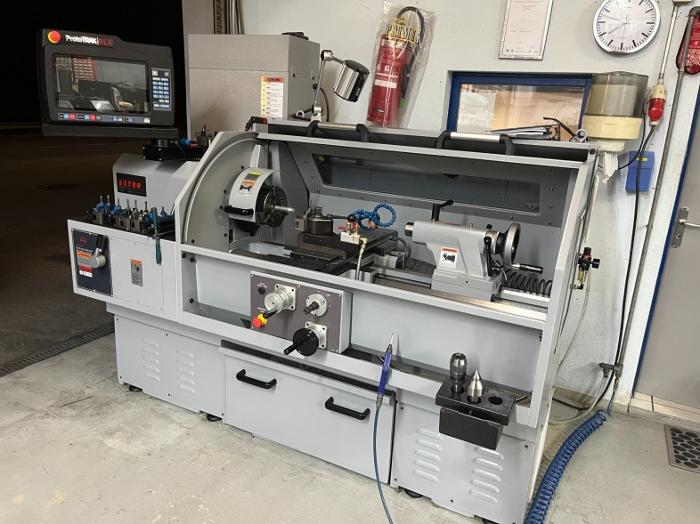
Zyklendrehmaschine
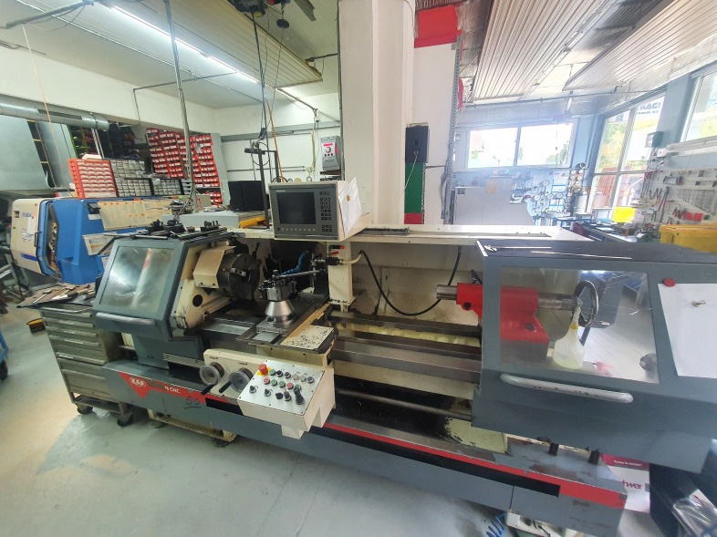
Zyklendrehmaschine
Drei Anlagen für präzise Fräsarbeiten – von grosszügigen Verfahrwegen bis zur simultanen Positionierung über B- und C-Achse.
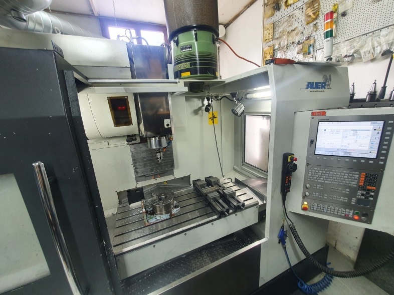
CNC-Bearbeitungszentrum
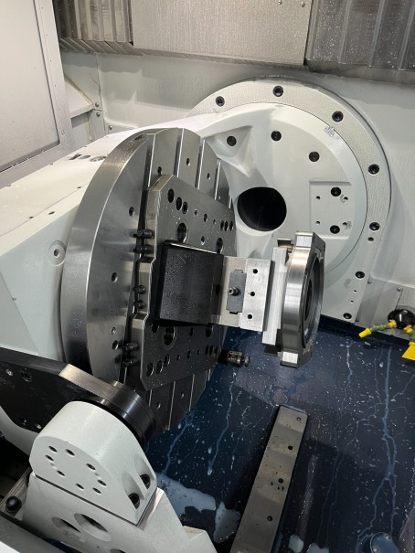
5-Achs-Bearbeitungszentrum
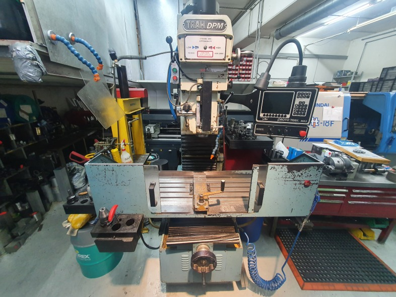
3-Achs-Fräsmaschine
Ergänzende Präzisionsbearbeitung für plane Oberflächen und definierte Abmessungen.
Flachschleifmaschine
Für präzise Flachschleifarbeiten mit einem Bearbeitungsbereich von 200 × 500 mm.
Qualität, auf die Sie bauen können
Als ISO-9001-zertifizierter Betrieb arbeiten wir mit klaren Qualitätsabläufen und einem modernen Maschinen- und Softwareumfeld. SolidCAM und SolidWorks ermöglichen die direkte Umsetzung Ihrer 3D-Daten.
Persönlich. Erfahren. Verlässlich.
Seit 1989 steht Hagi Mechanik für Fachwissen, Flexibilität und zuverlässige Ausführung. Heute führen Amanda und Christian Moser das Unternehmen in die nächste Generation – persönlich erreichbar und nah an jedem Auftrag.
Lernen Sie uns kennen →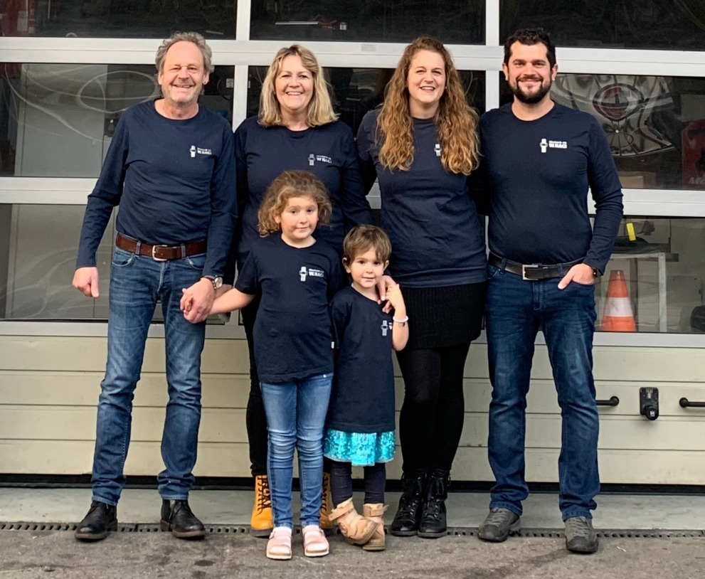
So einfach geht es
Zeichnung oder 3D-Datei mit Stückzahl und Terminwunsch übermitteln.
Wir prüfen die Machbarkeit und melden uns mit einer unverbindlichen Offerte.
Nach Ihrer Freigabe fertigen wir den Auftrag zuverlässig in Wünnewil.
Häufig gefragt
Klare Antworten helfen Interessierten – und machen das Angebot auch für Such- und KI-Systeme verständlicher.
Technische Einzelteile, Prototypen und mittelgrosse Serien für unterschiedliche Branchen – nach Zeichnung oder 3D-Datei.
Ja. 3D-Daten können per E-Mail übermittelt und mit SolidCAM und SolidWorks weiterverarbeitet werden. Technische Zeichnungen sind ebenfalls möglich.
Der Maschinenpark umfasst fünf Drehmaschinen, drei Fräsmaschinen und eine Flachschleifmaschine. Dazu gehören unter anderem eine Hyundai L 2600 SY mit Gegenspindel sowie eine Spinner U-630 mit B- und C-Achse.
Hagi Mechanik ist für Flexibilität bekannt und prüft auch kurzfristige Anfragen. Der konkrete Termin wird nach Prüfung des Auftrags bestätigt.
Die Fertigung befindet sich an der Felsenegg 26 in 3184 Wünnewil im Kanton Freiburg.
Ihr Projekt beginnt hier
Senden Sie uns Ihre Zeichnung oder 3D-Datei. Gerne prüfen wir Ihre Anfrage und erstellen eine unverbindliche Offerte.
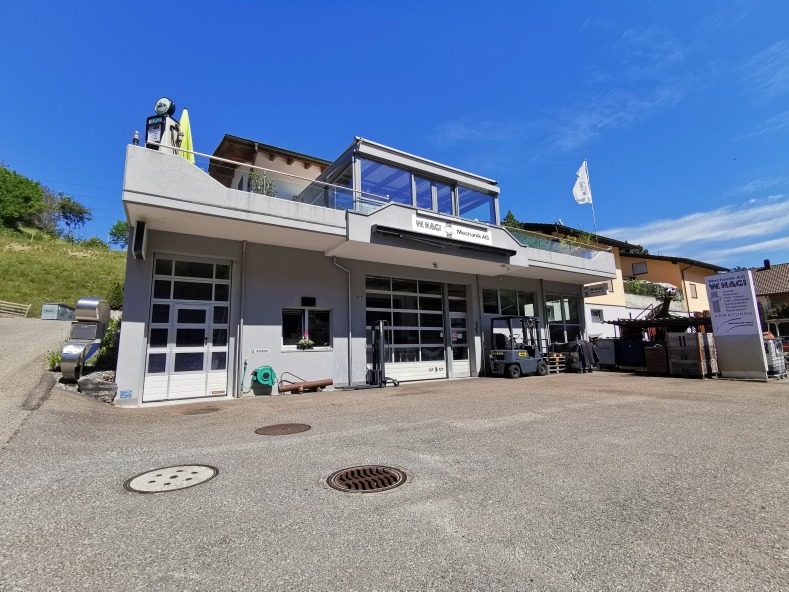
Hagi Mechanik AG
Felsenegg 26
3184 Wünnewil